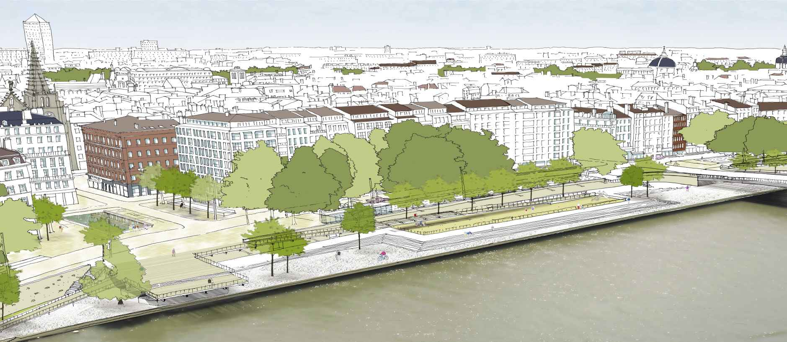

Survolez l'image et agrandissez/réduisez la vue à l'aide de la molette.
Budget: 23 000 000 €
Surface: 50 615 m²
Date début: 2013
Date fin: 2013
Maîtrise d'ouvrage: Communauté Urbaine de Lyon
Co-traitant(s): bureaux des paysages
Description:
Qu’il s’agisse du climat, des lumières, des couleurs, des ambiances, d’une certaine forme de discrétion faite
d’attentions et de nuances, on pourrait dire de notre proposition qu’elle est tempérée. il nous est apparu
essentiel d’établir des correspondances plus évidentes que celles qu’entretiennent aujourd’hui la ville et le fleuve, de mettre en scène le fleuve depuis un passage libre de tout obstacle le long du parapet de pierre qui
borde le quai. empruntant les passerelles, rampes légères, qui relient le bas port au quai, on peut désormais
parcourir ce qui était hier encore une limite et qui devient une promenade, une promenade architecturale.
dans les grandes marches qui accompagnent la différence de niveau entre le haut du quai, les chaussées et
les trottoirs plus bas, sont implantés, entre de grands arbres d’essences variées, tous les éléments du mobilier,
les kiosques, les édicules d’accès et de sortie des parkings, les points de comptage pour les commerçants,
les stands des bouquinistes.Notre manière d’intervenir et de modifier ce qui est là a comme principale finalité
de créer des lieux où l’on puisse goûter au plaisir d’être ensemble en ville.
Les usages prennent le pas sur la
forme ou plus exactement la forme que l’on donne aux lieux ayant pour objet d’accueillir des pratiques, celles
que l’on imagine et d’autres encore, pour présenter les quais sous leur meilleur jour, y compris lorsqu’il ne s’y
passe rien. Mais sur les quais, il se passe presque toujours quelque chose, la journée avec le marché et la ronde
des enfants des écoles descendant le long des passerelles sur la terrasse du bord de l’eau face au spectacle
du fleuve et de la colline. Le soir, on vient y dîner allant de cuisine en cuisine pour goûter à des saveurs qui
s’accordent avec le temps qu’il fait et assister à un petit concert improvisé. Mais cette histoire reste à écrire à
partir d’un projet et de sa mise en œuvre où le chantier, avec l’arrivée des passerelles, des fûts et grands arbres
sur de longues barges, est déjà le début d’un récit, une promesse.
{kind=link}
{kind=link}
{kind=link}
{kind=link}